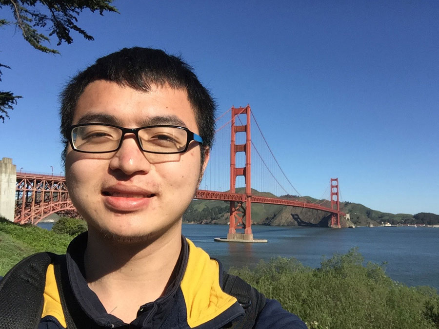
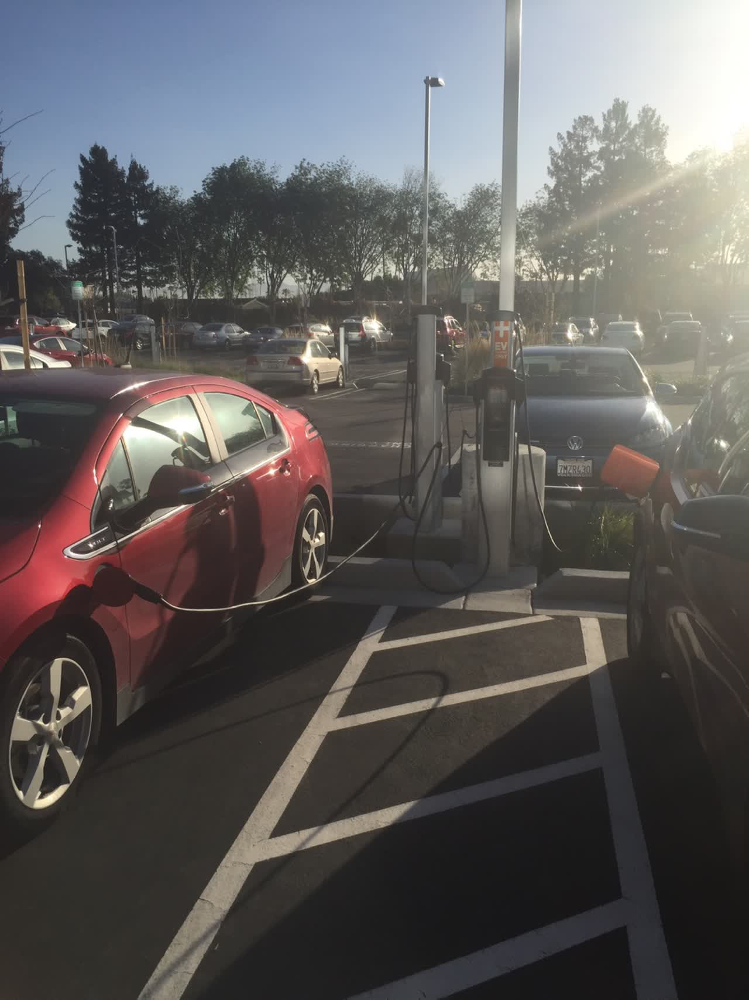
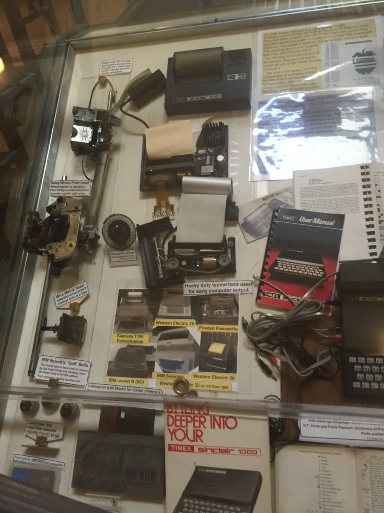
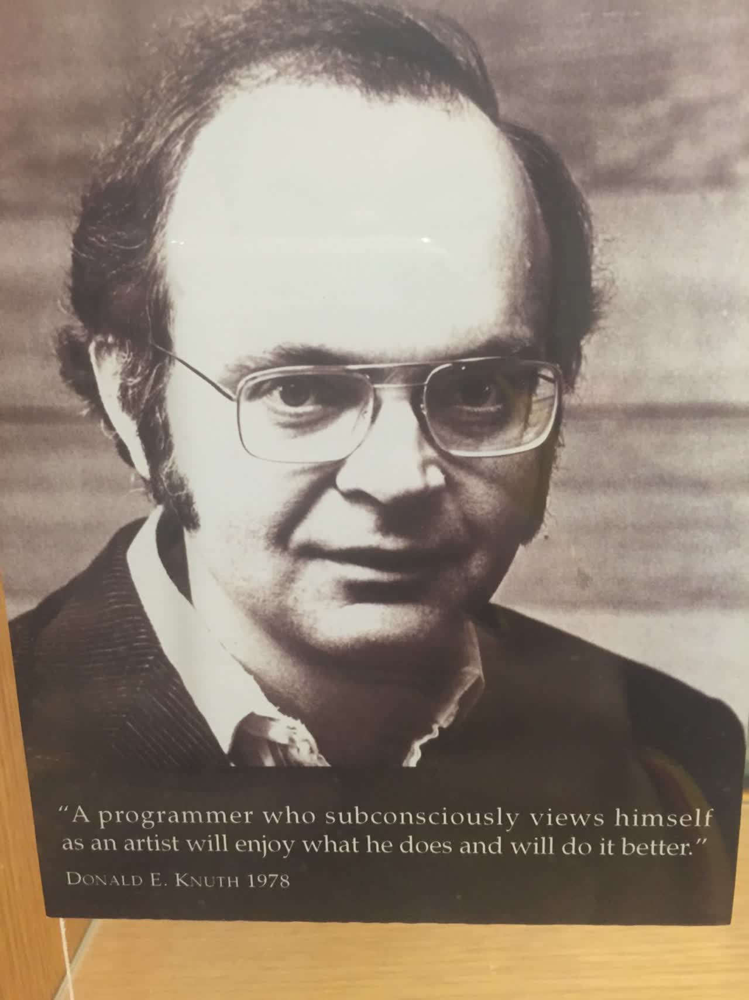
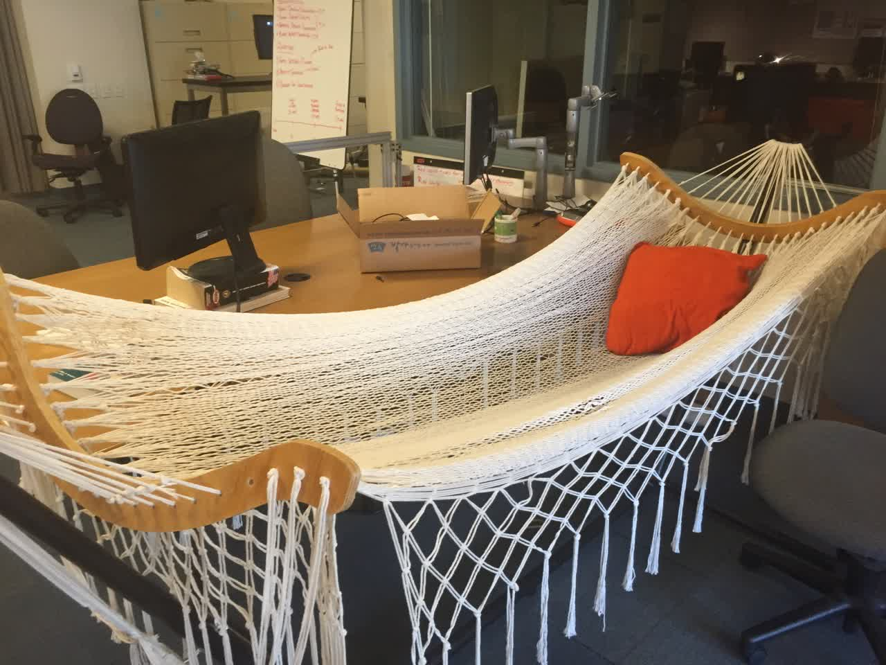
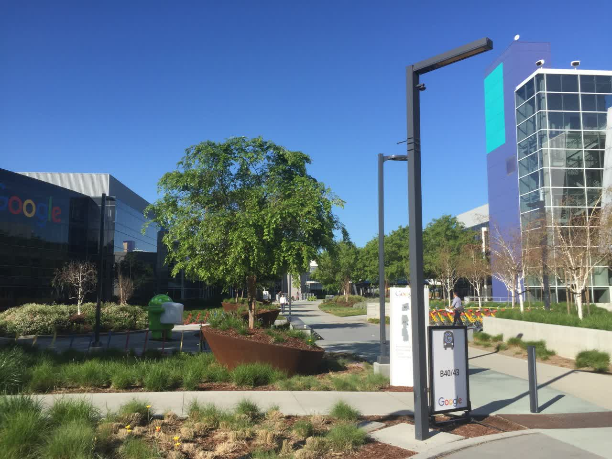
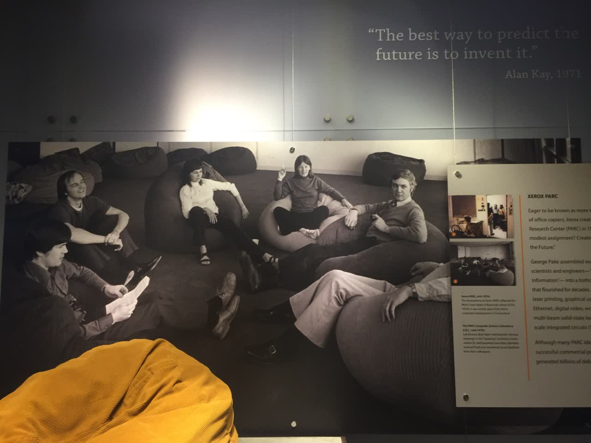

अमेरिका की यात्रा | मूल, AI द्वारा अनुवादित



3.14~4.1 美国 में आधा महीना बिताया, Stanford, Google, कंप्यूटर इतिहास संग्रहालय, Y Combinator इन्क्यूबेटर घूमा, पूर्वजों द्वारा बड़ी जिज्ञासा और ऊर्जा से बनाई गई कृतियों को देखा, Google भवन में दुनिया की सबसे उच्च गुणवत्ता वाली सेवाएं प्रदान करने के लिए प्रवेश करते हुए कई प्रतिभाशाली लोगों को देखा, Stanford के Gates भवन में स्नातक छात्रों को अग्रणी शैक्षणिक शोध करते हुए देखा, और YC में सैकड़ों बेचैन युवाओं को अपने उत्पाद बनाते हुए देखा। फिर San Francisco आया, कई बेघर लोगों को देखा, अक्सर सायरन की आवाज़ सुनी, और असुरक्षा महसूस की। Silicon Valley के चीनी स्टार्टअप टीम Mailtime से मिला, उनके Bug ठीक करने में मदद की, और Silicon Valley में काम करने का अनुभव किया। एक NBA मैच देखा, Curry और Paul को करीब से देखा। द्वितीय विश्व युद्ध के नायक USS Hornet विमानवाहक पोत का दौरा किया। अमेरिकी गृहयुद्ध में प्रसिद्ध Union Square, de Young संग्रहालय, California Academy of Sciences, कई कंपनियों का जन्मस्थान University Street, Golden Gate Bridge, Baker Beach भी गया, और मेरे रहने की जगह से तीन किलोमीटर के भीतर Twitter, Uber, LinkedIn, Slack को देखा, और GitHub, Pinterest, Docker, Amazon, Dropbox भी पास में थे लेकिन वहां नहीं गया।
मैं हमेशा से दोस्तों के प्रभाव में रहा हूं और खुद भी सिलिकॉन वैली की ओर आकर्षित रहा हूं। 2 मार्च की दोपहर को मेरे मन में फिर से अमेरिका जाने का विचार आया, और मैंने तुरंत फॉर्म भर दिया। 12 दिन बाद मैं अमेरिका में था और वहां डेढ़ महीने तक घूमा। कुल मिलाकर मैंने 20,000 RMB खर्च किए। इससे मुझे बहुत प्रोत्साहन मिला, पहले जो चीजें मुझे मुश्किल लगती थीं, अब वे आसानी से हो गईं। पहले मैं सोचता था कि वीजा क्या होता है, मुझे और पैसे बचाने चाहिए, आदि।
“अमेरिका जाना, अब और देरी नहीं कर सकते!”
इस यात्रा में मेरी मदद करने वाले Xuehui, Xuehui के रूममेट, Mailtime टीम, और Alex का धन्यवाद। इस यात्रा में मैंने बहुत से लोगों से मुलाकात की, हर Uber और Lyft ड्राइवर, Airbnb के मेजबान, हर वह व्यक्ति जिसने मुझे रास्ता बताया और बस पकड़ने में मदद की, और हवाई जहाज में बैठे मेरे पड़ोसी दोस्तों का भी धन्यवाद। कॉफी शॉप, कैंपस, सड़क, मॉल, ट्रेन, और बस में मिले हर व्यक्ति का भी आभार।
तीन दिन में अमेरिका टूरिस्ट वीज़ा प्राप्त करने के बाद, एक हफ्ते बाद 9 मार्च को वीज़ा लगा हुआ पासपोर्ट मिल गया। फिर मैंने 14 मार्च की फ्लाइट बुक कर ली और अमेरिका के लिए रवाना हो गया। पहली बार विदेश जाने का अनुभव था, इसलिए कुछ उत्साह था। लेकिन मुझे पता था कि दूर जाने के लिए ज़्यादा सामान ले जाने की ज़रूरत नहीं होती। मैंने सिर्फ एक-दो कपड़े लिए और उन्हें अपने कंप्यूटर बैग में डाल दिया। बैकपैक में कंप्यूटर रखा। बैंक से 3000 डॉलर का एक्सचेंज करवाया, लेकिन बाद में पता चला कि इसकी ज़्यादा ज़रूरत नहीं थी, एक Visa कार्ड ही काफी था। बैकपैक और एक साइड बैग लेकर मैं निकल पड़ा।
पहले विमान सिएटल के लिए उड़ान भरता है, और फिर सैन जोस के लिए कनेक्टिंग फ्लाइट लेता है। सिएटल हवाई अड्डे पर, आप सीधे छोटी मेट्रो लेकर गेट तक जा सकते हैं। राजधानी अंतर्राष्ट्रीय हवाई अड्डे पर, आमतौर पर बस लेकर गेट तक जाते हैं। लेकिन सिएटल में यह एक पूरी तरह से स्वचालित परिवहन प्रणाली है, जहां कोई ड्राइवर नहीं दिखता। ये स्वचालित डिब्बे यात्रियों को किसी भी गेट से दूसरे गेट तक पहुंचाते हैं। यह बहुत प्रभावशाली है, सोचा नहीं था कि एक हवाई अड्डे को इस तरह से व्यवस्थित किया जा सकता है।


ऐसा लगता है कि यह किसी कंपनी की तरह है, जहाँ उनका टेस्टिंग और रिलीज़ पूरी तरह से स्वचालित है। इस तरह के समाधान के बारे में सोचने के लिए उत्कृष्ट प्रतिभा वाले लोगों की जरूरत होती है, और संबंधित संस्थाएं भी इस समाधान को अपनाने के लिए तैयार हैं।
ट्रांसफर फ्लाइट के लिए छह घंटे इंतजार करना पड़ रहा है, इसलिए मैंने Burger King से कुछ खाने के लिए खरीदा। यहां के स्टाफ बहुत ही मिलनसार हैं। Burger King में एक बहन थी, जब भी किसी का नंबर आता, वह एक-दो मजाकिया बातें करती, जैसे कि वह आपके पुराने दोस्त हों और आपके साथ मजाक कर रही हों। शायद यह प्रतिस्पर्धा के कारण है, जैसे कि पहले के ट्रांसपोर्ट सिस्टम में, यहां के लोग सबसे अच्छा करना चाहते हैं, इसलिए उनके बॉस ने कर्मचारियों से ग्राहकों के साथ मिलनसार होने का आग्रह किया है। वास्तव में, आम लोग भी बहुत दोस्ताना हैं, इसलिए स्टाफ का मिलनसार होना कोई आश्चर्य की बात नहीं है।
एक बार सैन फ्रांसिस्को में, मेट्रो और बस एक ही जगह पर थे, मुझे नहीं पता था कि कैसे जाना है, तो मैंने देखा कि दो लड़के आ रहे हैं। मैंने अपना फोन निकाला और उन्हें बताया कि मुझे कहाँ जाना है। उन्होंने कहा कि नीचे जाओ। मैं उनके साथ नीचे गया, वे टिकट चेकपॉइंट में चले गए, और मैं पेपर टिकट खरीदने गया। उन्होंने मेरा आधा मिनट इंतजार किया, लेकिन मैं अभी तक टिकट नहीं खरीद पाया था। मैंने उनसे कहा, आप लोग पहले चले जाओ। फिर उन्होंने मुझे बताया कि टिकट चेकपॉइंट पार करने के बाद, नीचे जाओ और सामने वाली तरफ से बस पकड़ो। मैंने कहा ठीक है। तब वे चले गए।
在北京取机票的时候，我认识了一个姑娘。后来在西雅图等飞机时又遇到了她。我们前前后后聊了大概三四个小时。她刚从泰国旅游回来，是一名护士。她的口头禅是“It depends”（这得看情况）。在很多事情上，比如美国的创业现状、美国与中国的一些区别，我往往是一根筋，认为一就是一，而她却总能更全面地看待问题。她经常使用 iMessage。在待了20天后，我也发现，iMessage 对于美国人来说就像微信对于我们一样重要。大概是因为大家都用苹果手机，iMessage 可以直接通过流量发送消息。
स्टैनफोर्ड और यूनिवर्सिटी स्ट्रीट
सिलिकॉन वैली से नीचे देखने पर बहुत सुंदर लगता है, घर बहुत साफ-सुथरे लगते हैं। वहां पहुंचने के बाद Xuehui ने मुझे लेने आया, Xuehui मेरे लिनये विश्वविद्यालय में फ्रेशमैन ईयर का टीचिंग असिस्टेंट था, बीजिंग यूनिवर्सिटी में मास्टर्स करने के बाद वह Google में काम करने आ गया। उसने मुझे लेने के लिए एक BMW ली, किराए पर ली हुई कार, महीने का करीब 300 डॉलर। उसके घर पहुंचे, जो एक बंगले जैसा था, पहली मंजिल पर पार्किंग, दूसरी मंजिल पर लिविंग रूम और किचन, तीसरी मंजिल पर तीन बेडरूम। बहुत आरामदायक और विशाल लगा। वह अपने कॉलेज के दोस्त के साथ रहता है।
गूगल में नाश्ता करने गया। मेरी पिछली कंपनी ने माइक्रोसॉफ्ट एक्सेलेरेटर में चयनित होने के कारण माइक्रोसॉफ्ट चाइना रिसर्च इंस्टीट्यूट में भी खाना खाया था, जो काफी अच्छा था, लेकिन गूगल उससे भी बेहतर है। खाना खाने के बाद, प्लेट रखने की जगह घूमती है, यहां प्लेट रखो, आधा चक्कर घूमो, और आंटी प्लेट को नीचे उतारकर धोती है। उस समय मैं हैरान रह गया। गूगल के पार्किंग स्थल पर पहले से ही चार्जिंग पॉइंट हैं, इलेक्ट्रिक कारों का युग आने वाला है।



फिर हमने स्टैनफोर्ड यूनिवर्सिटी जाने के लिए Uber किया, जिसमें लगभग 10 डॉलर का खर्च आया। Uber ड्राइवर के साथ बातचीत करते हुए, जो कि लैटिन अमेरिकी मूल के थे, उन्होंने कहा कि सिलिकॉन वैली में स्टार्टअप्स हर जगह हैं (startups are everywhere)। उनका मानना था कि नागरिकों के पास बंदूकें रखने पर प्रतिबंध लगाना चाहिए, क्योंकि बंदूकें कुछ पागल लोगों को प्रोत्साहित कर सकती हैं। यहाँ फिर से Visa कार्ड की सिफारिश करना जरूरी है, क्योंकि इससे ही आप Uber में बाइंड कर सकते हैं।


फिर मैंने एक चीनी छात्र से बात की, जो बायोटेक्नोलॉजी में पढ़ रहा था और स्टैनफोर्ड में मास्टर्स करने आया था। वह कहीं पढ़ने के लिए जगह ढूंढ रहा था। जब हम उस इमारत में पहुंचे जहां वह जाना चाहता था, तो मैं आसपास घूमने लगा और स्टैनफोर्ड के कंप्यूटर विभाग की इमारत देखने का मन बनाया। इस तरह मैं बिल गेट्स द्वारा दान की गई इमारत में पहुंच गया:

गलियारे में बहुत सारे विभिन्न प्रकार के इलेक्ट्रॉनिक उपकरण हैं।






मुझे लगता है कि वे बहुत समझदार हैं और शिक्षा को गहराई से समझते हैं। मेरा विश्वविद्यालय बीजिंग फॉरेस्ट्री यूनिवर्सिटी है, हालांकि हमारे शिक्षण भवन में भी वानिकी विषय के पूर्वजों के बारे में कुछ जानकारी है, लेकिन स्टैनफोर्ड की तुलना में यह बहुत कम है। गेट्स भवन में, हर गलियारे और हर अलमारी में ऐसे प्रदर्शन हैं। नई पीढ़ी के युवा इसे देखकर क्या सोचेंगे?
फिर मैं पूरी इमारत में घूमता रहा, और एक-एक कमरे में देखा, जहाँ छात्र कोड लिख रहे थे और चर्चा कर रहे थे, और गलियारों में उनके शोध पत्र प्रदर्शित थे।




यहाँ दो चीनी पीएचडी हैं जिनके बारे में मैंने सुना है, चेन डानकी और चेन किफेंग। दोनों ने हाई स्कूल के दौरान ही अंतरराष्ट्रीय कंप्यूटर प्रतियोगिताओं में स्वर्ण पदक जीते हैं।
मैं अपने भविष्य के बारे में सोचने से खुद को रोक नहीं पा रहा हूँ। वे अत्याधुनिक तकनीकों पर शोध करते हैं, जैसे कि वास्तविक गति को छवियों के माध्यम से कैसे अनुकरण किया जाए। मुझे लगता है कि फीफा जैसे खेलों की तकनीक भी विश्वविद्यालयों से ही आती होगी। और मैंने जल्दी ही कॉलेज छोड़ दिया और उद्यमिता के रास्ते पर चल पड़ा। Paul Graham कहते हैं कि कॉलेज में उद्यमिता के लिए सबसे अच्छी तैयारी यह है कि खुद को भविष्य में ले जाएं और अपने क्षेत्र के अग्रिम मोर्चे पर खड़े हों। उद्यमिता में सबसे महत्वपूर्ण बात यह है कि आप किसी क्षेत्र के विशेषज्ञ बन जाएं, जैसे कि Google के संस्थापक सर्च इंजन के विशेषज्ञ थे, और व्यावसायिक चीजें वे हैं जो आप उद्यम शुरू करने के बाद सीख सकते हैं।
फिर हम हूवर टॉवर गए, जहाँ से स्टैनफोर्ड कैंपस का मनोरम दृश्य देखा।


कई कॉलेज दुनिया के शीर्ष संस्थानों में से हैं, और कई प्रोफेसर विश्व स्तर के हैं। यहां समाज के नेताओं को तैयार किया जाता है, और ये लोग वापस आकर स्कूल को दान देते हैं, इमारतें बनवाते हैं, इसे एक प्रदर्शनी हॉल की तरह बनाते हैं, और युवा पीढ़ी को प्रभावित करते हैं कि वे भी समाज के नेता बनें। इस तरह यह चक्र चलता रहता है।
फिर मैं स्टैनफोर्ड के पास की यूनिवर्सिटी स्ट्रीट पर घूमने गया। 165 नंबर पर प्रसिद्ध “लकी ऑफिस” है, जहां Google और PayPal का जन्म हुआ था। एक मिठाई की दुकान में मैं एक व्यक्ति से मिला, जो C-राउंड कंपनी Bevy का CEO था। वह बोस्टन से यहां बिजनेस ट्रिप पर आया था और निवेशकों के साथ मीटिंग कर रहा था।


अंतिम दो तस्वीरों में यह जगह बहुत ही जीवंत लग रही है, ऐसा लगता है कि यहां बहुत से लोग निवेशक और उद्यमी हैं। कहा जाता है कि इन्हें अलग करने का एक अच्छा तरीका यह है कि जो लोग पीछे की ओर झुके हुए हैं वे निवेशक हैं, और जो आगे की ओर झुके हुए हैं वे उद्यमी हैं। यहां इतने सारे निवेशक और उद्यमी क्यों हैं? क्या यह इसलिए है क्योंकि निवेश संस्थान आस-पास हैं, या फिर यहां बहुत से उद्यमी हैं?
रात को Airbnb के कमरे में ठहरा, मकान मालिक स्थानीय था, जो यहीं पला-बढ़ा था। उसने कहा कि Apple के IPO के समय 1980 में ही उसे Steve Jobs के बारे में पता चल गया था, और वह Apple के विकास को देखता रहा। उसने कहा कि टेक्नोलॉजी युवाओं का काम है, इसमें बहुत सारी ऊर्जा की आवश्यकता होती है। यह एहसास कि Jobs उसी शहर में थे, वाकई अद्भुत है। बचपन से ही इस माहौल में रहने वाले, टेक्नोलॉजी में रुचि रखने वाले लोगों को बहुत प्रोत्साहन मिलता है। जैसे मेरे बचपन में, Shenzhou 6 के अंतरिक्ष में जाने के बाद, मैं बहुत उत्साहित था और एक अंतरिक्ष यात्री बनने का सपना देखता था। हालांकि Shenzhou 6 का प्रक्षेपण Shaanxi में हुआ था और मैं Guangdong में था, फिर भी इसने मुझे यह महत्वाकांक्षा दी। अगर दूरी बहुत कम होती, तो मैं और भी कहानियाँ सुनता। यह सिर्फ खबर नहीं होती, बल्कि दोस्त भी अपनी आँखों देखी कहानियाँ सुनाते।
Google और कंप्यूटर इतिहास संग्रहालय
दूसरे दिन, मैं Google के मुख्य भवन में घूमने गया, वहाँ बहुत सारी इमारतें हैं, लेकिन मैंने केवल कुछ ही देखीं।



फिर मैं कंप्यूटर इतिहास संग्रहालय गया, जहाँ लकड़ी के अबेकस से लेकर मैकेनिकल कंप्यूटर, फिर इलेक्ट्रॉनिक कंप्यूटर, हार्ड ड्राइव, प्रिंटर, माउस जैसे हार्डवेयर, और Windows 1.0, Photoshop जैसे सॉफ्टवेयर के इतिहास, साथ ही गेम्स और इमेजिंग टेक्नोलॉजी के इतिहास को एक नज़र में देखा। यह देखकर मुझे अहसास हुआ कि अमेरिका की तकनीकी प्रगति का एक लंबा और समृद्ध इतिहास है, जो सैकड़ों सालों से कई पीढ़ियों के लोगों के जुनून और समर्पण से बना है, जिसने इसे इतना उत्कृष्ट बना दिया है।


ऊपर के कर्मचारी कार्ड को मशीन पर भेजते हैं, और मशीन उन्हें क्रमबद्ध करती है।



Xerox 硅谷研究中心, एक दिव्य स्थान की तरह, जिसने ग्राफिकल यूजर इंटरफेस, माउस, लोकल एरिया नेटवर्क (LAN), लेजर प्रिंटिंग, ऑब्जेक्ट-ओरिएंटेड प्रोग्रामिंग, MVC आर्किटेक्चर, और बिटमैप का आविष्कार किया।

बाहर निकलने के बाद, हमने दोपहर का भोजन किया, जो काफी स्वादिष्ट था, किसी प्रकार का पास्ता।

यहाँ तक के लिए, आगे मैं सैन फ्रांसिस्को में स्थित प्रमुख कंपनियों की घनत्व, वहाँ के वेतन, सैन फ्रांसिस्को में 10 दिनों तक रहने और किराए पर रहने के अनुभव, और USS हॉर्नेट एयरक्राफ्ट कैरियर की यात्रा के कुछ अनुभवों के बारे में बात करूंगा।